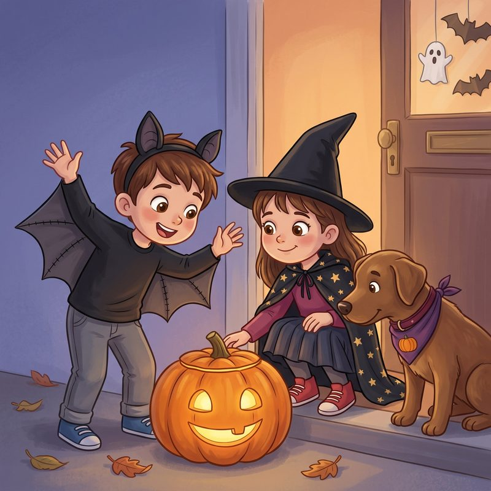

Halloween für alle
Ein Gruselfest für alle
Ein bisschen Grusel und ganz viel Miteinander
- 14 Seiten
- ca. 11 Min. Lesezeit
- Hörgeschichte, 11 Min.
- Lesen üben: Klasse 1 bis 3
Worum es geht
Fiete und Lotte bereiten mit Mama, Papa und Oma eine Halloweenparty vor. Aus alten Dingen entstehen gruselige Dekorationen und tolle Kostüme. Das Fruchtfleisch ihres geschnitzten Kürbisses wird zu einer leckeren Suppe. Auch ihren Nachbarn Herrn Berg beziehen sie in die Vorbereitungen ein. Als es dunkel wird, ziehen die verkleideten Kinder mit Paco durch die geschmückte Nachbarschaft. Dabei achten sie darauf, dass alle mitmachen können. Zum Abschluss kommt Herr Berg mit zur Party, und gemeinsam lassen sie den aufregenden Abend ausklingen.
Das entdeckt dein Kind
- Aus vorhandenen Dingen kann etwas Neues entstehen. Alte Stoffe und Kartons werden zu Kostümen und Dekoration. Das herausgelöste Kürbisfleisch lässt sich zum Kochen verwenden.
- Kleine Gesten können anderen Freude schenken. Fiete und Lotte besuchen ihren Nachbarn, helfen ihm beim Schmücken und laden ihn zum Mitfeiern ein.
- Alle sollen mitmachen können. Die Kinder achten aufeinander und fragen, welche Unterstützung jemand möchte.
Die ganze Geschichte gibt es in der Aha Kids App, zum Vorlesen, zum Anhören und zum Lesen üben.